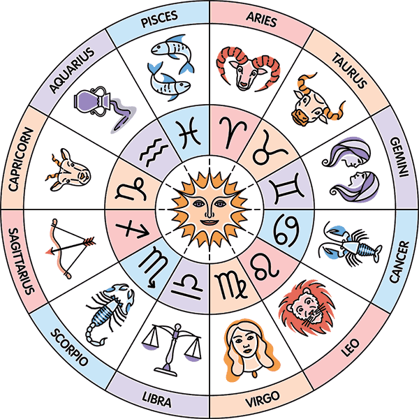
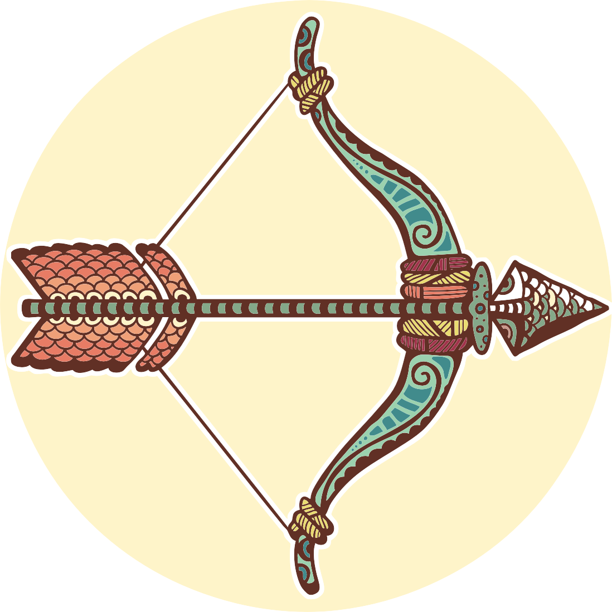

Desde la Antigüedad, la astrología ha suscitado la atención y el interés de multitud de personas. En el estudio de la influencia que la posición de los cuerpos celestes tiene sobre nuestras personalidades y nuestros destinos, los signos zodiacales tienen especial importancia y es que están marcados por un acontecimiento tan importante como es nuestro nacimiento. Hay un total de 12 signos en el Zodíaco occidental: Aries, Tauro, Géminis, Cáncer, Leo, Virgo, Libra, Escorpio, Sagitario, Capricornio, Acuario y Piscis. Cada uno de estos signos tiene una personalidad y características que representan a 12 tipos de personalidades y que, según las relaciones que guardan con otros signos y astros, pueden marcar distintos aspectos de tu vida.
.png)
Si has nacido entre el 20 de enero y el 18 de febrero, eres del signo Acuario. Regida por Saturno y Urano, eres capaz de canalizar tu espíritu especial e innovador en un trabajo productivo. También valoras tu independencia y necesitas tener cierta libertad en tu vida para hacer lo que quieras. Te desenvuelves bien en entornos sociales y tienes el potencial de ser un líder de tu comunidad, pero a menudo te sientes como un ser extraño o necesitas más tiempo para estar a solas..

Si has nacido entre el 22 de noviembre y el 21 de diciembre, eres del signo Sagitario. Regido por Júpiter, este signo es optimista por naturaleza y suele ver el lado bueno de la mayoría de las situaciones. Las personas del signo Sagitario aceptan fácilmente las nuevas oportunidades y les gusta estar siempre aprendiendo y explorando. Es a través de los viajes, la lectura y la interacción con gente de todas partes que los Sagitario son capaces de formar sus propias opiniones y creencias.
Si has nacido entre el 18 de febrero y el 20 de marzo, eres del signo Piscis. Regido tanto por Júpiter como por Neptuno, este signo del zodiaco es muy sensible y sus fuertes emociones lo empujan siempre a conocer otras facetas de sí mismo. Se siente realizado ayudando a la gente y estableciendo vínculos más fuertes con los demás, pero es posible que tenga que recordar que debe proteger su propia energía de vez en cuando. Una parte del crecimiento personal del signo del zodiaco Piscis se produce cuando se toma momentos para estar solo.
Si has nacido entre el 22 de septiembre y el 22 de octubre, eres del signo Libra. Regido por Venus, las personas de este signo zodiacal, son encantadoras por naturaleza, y hay algo en ellas que hace que a la gente le guste estar cerca. Los del signo Libra, le dan prioridad a las relaciones en su vida, es muy importante para ellos relacionarse con los demás. También se esfuerzan por conseguir el equilibrio, y buscan asegurarse de que todo el mundo esté atendido.
Si has nacido entre el 21 de diciembre y el 19 de enero, eres del signo Capricornio. Regido por Saturno, este signo se toma muy en serio todos sus compromisos, y es a través del trabajo duro y de la excelencia en su trabajo como construye su autoestima. Los del signo Capricornio, se esfuerzan constantemente por asumir más responsabilidades y se esfuerzan por ser alguien a quien los demás admiren y respeten. Sin embargo, los Capricornio puede que necesiten ser un poco más fáciles con ellos mismos de vez en cuando.